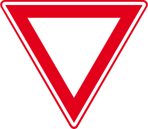
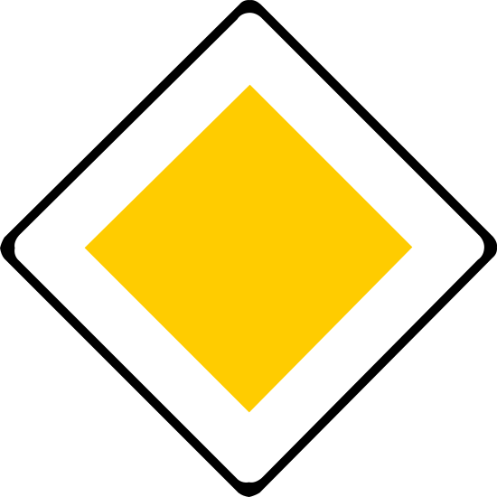
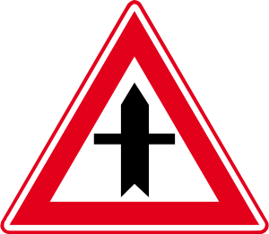
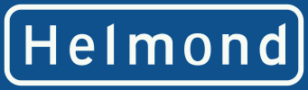
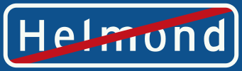
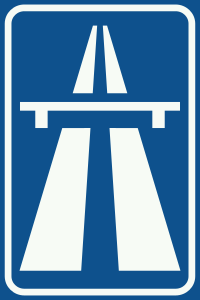
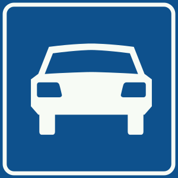

There are two types of intersections in the Netherlands: signed and unsigned intersections.
Signed intersections are intersections between a main road and a side road of lesser importance. Vehicles coming from the side road have to give way to vehicles on the main road.
Traffic that needs to give way has 'shark teeth' and a sign .
Traffic signs on crossings with traffic lights can be ignored if the traffic lights are working: these signs only apply when the lights are out of order.
Traffic that has the right of way either has a sign , or .
On unsigned intersections, you need to give way to all vehicles (including bicycles) coming from the right. These intersections are always smaller roads, such as residential districts. Vehicles on the main road has a sign . Note that for the purpose of all preceding rules (priority to the right, signed priority crossings), cyclists are trated the same as cars. When turning into some streets, the pavement is raised. In this case, traffic crossing the pavement needs to give way to all traffic on the main road (including pedestrians).With roundabouts, you need to give way at two places. First, when approaching the roundabout, look left to give way to any traffic already on the roundabout. The bicycle paths might or might not be included (pay attention to the shark teeth).
When leaving the roundabout, you often (but not always) need to give way to bicyclists and pedestrians. Pay attention to the shark teeth and zebra crossing.
Within built-up area, the speed limit is 50km/h. The beginning of built-up area is indicated with a sign showing the name of the town: .
Outside of built-up area, the speed limit is 80km/h. The end of town is indicated with a sign .
On roads signed with , the speed limit is 130km/h.
On highways (signed with ), the speed limit is 130km/h.
Additions/corrections: mail me at info@matthijsmelissen.nl or create a pull request on Github.